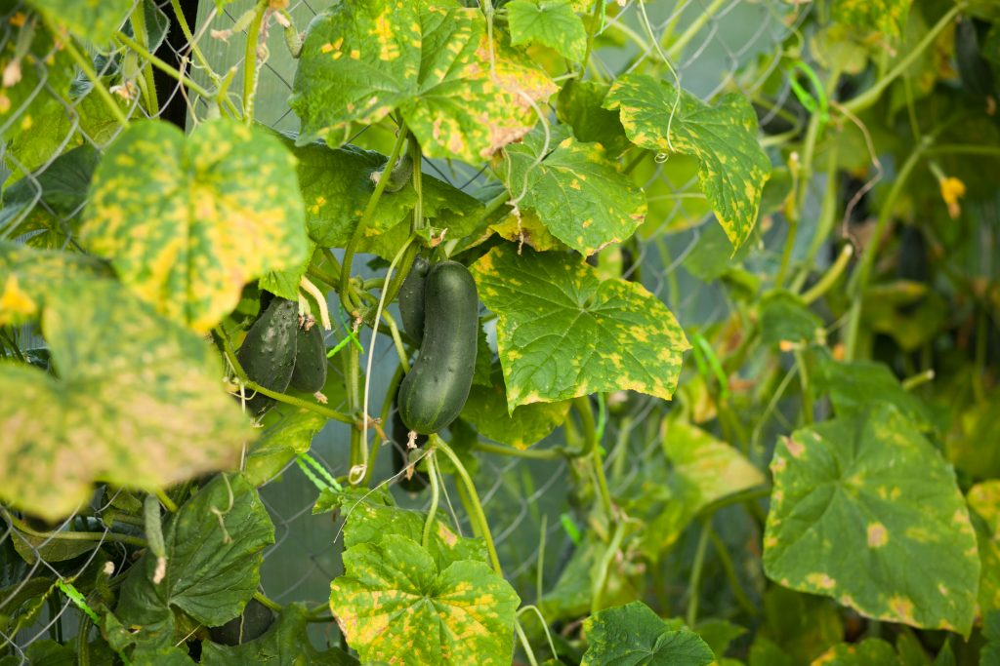

Каталог
Какие цветы нужно сеять на рассаду в январе
Казалось бы, на дворе январские морозы, февральские метели и стоит ли думать о каких-то мифических летних урожаях? Опытный садовод-огородник скажет вам, что пора! Пора задуматься о летнем урожае и нужно знать, какую рассаду сажают в январе, феврале и какие культуры требуют особого внимания в это время года.
Рекомендации какие цветы садить на рассаду в январе цветоводам-новичкам:
• Бегония – семена следует сеять в смесь листовой земли, песка и торфа в пропорции 2:1:1. Предпочтительно содержание посевов под стеклом.
• Гвоздика Шабо и турецкая гвоздика – сажать следует в плодородную почву, сверху присыпав песком, чтоб избежать такой неприятности, как «черная ножка».
• Гелиотроп – семена предпочитают влажную смесь песка и торфа. Проращивание эффективно под стеклом или пленкой.
• Лобелия – на слой плодородной земли следует насыпать слой сырого песка, в котором проделать бороздки. Сами семена смешать с сухим песком и высевать в подготовленные бороздки.
• Петуния – высаживать семена лучше всего в торфяную таблетку. Емкость с таблетками следует закрыть стеклом, т.к. для рассады петунии важна стабильная влажность. Всхожесть длительная – от 3-х до 4-х недель.
Вам понадобится обустроить настоящий мини огород на подоконнике, поэтому обязательно ознакомьтесь со всеми требованиями по его правильному содержанию. Вы уже знаете, что посадить в январе на рассаду, осталось лишь подготовить место, где она будет произрастать. В этом нет ничего сложного, но нужно быть щепетильным во всем, чтобы все получилось.
Зима в разгаре, а дачникам пора брать в руки садовый инвентарь и приниматься за дело! Опытные цветоводы уже начинают посевную кампанию. Сейчас мы выбираем те цветочные культуры, у которых срок от посева до начала цветения составляет 130-180 дней.
В эту группу попадают как однолетние, так и многолетние неторопливые растения. Посеяв их до конца января (в крайнем случае в начале февраля), можно увидеть цветы уже в июне. А многолетники в этом случае, что очень важно, зацветут в первый же год! Что же это за цветы?
1. Антирринум большой, или львиный зев

Антирринум большой (Antirrhinum majus) — чудесный однолетник, имеющий огромное количество сортов различных окрасок; есть у него и карликовые, и махровые сорта. Он интересен в цветниках, используется и для срезки.
Нюансы посева
Посеяв семена львиного зева сейчас, вы получите к маю цветущую рассаду. Семена не заделываем, а накрываем стеклом или пленкой. Проращиваем на свету, притеняя от прямых солнечных лучей. Температура +15...+20°С. Всходы появляются дружно через 8-12 дней. Сеянцы растут очень медленно, поэтому их пикируем спустя месяц после появления всходов. Распикированные сеянцы через 7-10 дней укореняются, и их уже можно подкармливать полным минеральным удобрением. Примерно во второй половине мая, после того как минует угроза возвратных весенних заморозков, закаленную рассаду смело высаживаем в открытый грунт; расстояние между растениями — 20-30 см (в зависимости от сорта).
Особенности культуры
Антирринум холодостоек, светолюбив, не засухоустойчив. Спустя 2 недели после посадки растения подкармливаем полным минеральным удобрением; через 2 недели подкормку повторяем. Поливаем умеренно. Цветение — с начала июля и до поздних заморозков.
Практический совет
Для посева можно использовать пищевые контейнеры с крышками, из них получаются настоящие мини-парнички, в которых комфортно сеянцам. Такие емкости легко проветривать, прозрачная крышка пропускает достаточно света, а объем даже совсем маленького контейнера позволяет использовать его до самой пикировки сеянцев.
2. Вербена гибридная
Вербена гибридная (Verbena x hybrida) — прекрасный однолетник, любимый многими цветоводами. Когда-то вербена была обязательной гостьей в цветниках старинных усадеб, а сегодня изысканно и роскошно смотрится в самых парадных элементах оформления загородного дома.
Нюансы посева
Семена высеваем в легкий, рыхлый субстрат из дерновой земли, хорошо выветрившегося, произвесткованного торфа и крупного промытого речного песка в соотношении 3:1:0,5 или в готовый субстрат для рассады цветочных культур. Посевы содержим в зимней теплице или в жилом помещении при температуре +18...+20°С. Семена всходят в течение 10-20 дней, долго и недружно. Чтобы ускорить прорастание, их хорошо подержать в любом стимуляторе роста — например, гумате (согласно инструкции). Так как всходы чувствительны к избытку влаги, поливаем их аккуратно, отстоянной водой комнатной температуры и только после того, как подсохнет верхний слой субстрата. Окрепшие сеянцы пикируем, потом постепенно закаливаем.
Особенности культуры
Вербена светолюбива, очень холодостойка и засухоустойчива. Закаленную рассаду в открытый грунт высаживаем с середины мая, соблюдая расстояние между растениями 20-25 см. Цветение — с начала июля и до поздних заморозков
3. Гайлардия остистая
Гайлардия (Gaillardia aristata) — это яркий многолетник, чаще выращиваемый как однолетник, с красивыми концентрически окрашенными соцветиями, имеющими лепестковидные краевые цветки. Именно гайлардия остистая известна на юге России под названием панской ромашки. Имеются современные сорта, «зажигающие» в цветниках различных стилей своим ярким эффектным цветением с середины июля и до поздних заморозков.
Нюансы посева
Довольно крупные семена высеваем по 4-5 штук в один горшок. Всходы появляются через 12-15 дней. Рассаду после закалки высаживаем в открытый грунт в мае, после того как минует угроза возвратных заморозков. Можно высевать семена прямо в грунт рано весной гнездами по 4-5 семян, сохраняя расстояние между ними 30 см, но цветения тогда ждать придется дольше.
Особенности культуры
Гайлардия холодостойка, устойчива как к слабым весенним, так и осенним заморозкам. Как многолетник она живет недолго. Нормально растет и обильно цветет только на солнечных участках с сухой рыхлой почвой. Можно размножать и делением корневищ. Повреждается голыми слизнями.
4. Гвоздика садовая
Гвоздика садовая (Dianthus caryophyllus) — роскошный многолетник, представленный самыми разнообразными сортами с малоцветковыми соцветиями. Большинство их гибридного происхождения; махровые известны под названием гвоздики Шабо.
Нюансы посева
Душистые цветки у этой гвоздики появятся только через 5-6 месяцев после посева, поэтому сеют её очень рано: в конце января — начале февраля. При этом семена раскладываем в бороздки глубиной 3 мм, сделанные в субстрате палочкой или линейкой через каждые 2-2,5 см. Семена засыпаем прокаленным речным песком. Потом на плошку надеваем полиэтиленовый пакет для сохранения влаги, посевы на подоконнике притеняем двойной газетой и содержим при температуре +18...+20°С. Когда появляются всходы, газету убираем, а потом снимаем и пакет. Сеянцы держим как можно ближе к свету; если они вытягиваются — досвечиваем фитолампами.
Особенности культуры
Гвоздики хорошо растут и цветут на открытых солнечных местах с сухими дренированными почвами. Плохо переносят пересадку во взрослом состоянии!
5. Гелениум осенний
Гелениум (Helenium autumnale) — шикарный многолетник, имеющий большое количество гибридных сортов, хорошо приспособленных к современным условиям.
Нюансы посева
Для посева понадобятся небольшие ящики или плошки и субстрат для выращивания рассады. Примерно через 3 недели после всходов, когда сеянцы достаточно окрепнут, их надо распикировать в отдельные горшочки и продолжать выращивать при температуре +15...+18°С в хорошо освещенном месте. В конце апреля — начале мая растения высаживаем в открытый грунт. Весной они приживаются быстро и в первое же лето уже цветут. С каждым годом эти зимостойкие многолетники будут становиться все мощнее и цвести более обильно.
Особенности культуры
Гелениум засухоустойчив, хорошо растет на открытых, солнечных, проветриваемых местах с хорошо дренированной почвой.
6. Дельфиниум гибридный
Под названием дельфиниум гибридный (Delphinium x hybridum) объединяются многолетние культурные формы и сорта сложного гибридного происхождения.
Нюансы посева
Семены высевают в ящички или контейнеры и закапывают в снег. Рано весной всходы пикируют; пересаживают на постоянное место в стадии 2-3 листьев.
Особенности культуры
Дельфиниумы светолюбивы, но могут переносить и небольшую ажурную тень. Хорошо растут и цветут на суглинистых плодородных почвах нейтральной реакции. Полив умеренный, не выносят переувлажнения. Нуждаются в регулярных подкормках. Растения, зацветающие в год посева, живут недолго: 2-3 года.
7. Колокольчик карпатский
Великолепный многолетний колокольчик (Campanula carpatica), который можно выращивать и как однолетник с сортами белой, голубой и фиолетовой окрасок. Появившиеся в последнее время в продаже семена его гибридов цветут в год посева.
Нюансы посева
Семена чуть-чуть присыпают землей (субстрат дерновой земли, перегноя, песка в соотношении 1:1:0,5 или готовая почвосмесь для цветочной рассады) и помещают в очень светлое место. Температура содержания +16...+20°С. Всходы появляются через 18-25 дней. Закаленную рассаду высаживаем в открытый грунт в мае на расстоянии 15-20 см.
Особенности культуры
Неприхотлив, зимостоек. Хорошо растет как на солнце, так и в тени на любых хорошо дренированных, некислых, умеренно влажных почвах. Для более роскошного цветения нуждается в регулярных поливах в сухую погоду и подкормках минеральными удобрениями. Продлевают цветение обрезкой отцветших побегов.
8. Кальцеолярия морщинистая
Эта кальцеолярия (Calceolaria rugosa, syn. integrifolia) — очень нарядный многолетник, выращиваемый и в качестве однолетника. Цветет без передышки с мая по сентябрь
Нюансы посева
Посев семян поверхностный, без заделки — их только накрывают стеклом или плёнкой! Содержат при оптимальной температуре +10...+15°С. В хорошо освещенном месте всходы появятся через 2-3 недели. Пикируем сеянцы через месяц после появления всходов. В марте молодые растения пересаживаем в горшки большего объема, а с середины апреля, если позволяет погода и заморозки не предвидятся, выставляем на открытый воздух, на солнечное и защищенное от ветра место.
Особенности культуры
Растения хорошо отзываются (закладывается много цветочных почек) на подкормки комплексными минеральными удобрениями, которые проводят каждые 2 недели. Субстрат в горшке должен быть постоянно слегка влажным.
9. Лобелия
Лобелия (Lobelia erinus) — великолепный однолетник с богатым разнообразием сортов; есть не только низкорослые, компактные, но и ампельные формы.
Нюансы посева
Тот, кто хочет уже в мае высадить на даче собственную цветущую рассаду этой красавицы, должен посеять ее семена прямо сейчас, так как от прорастания семян до образования первых цветков пройдет примерно 5 месяцев. Семена не заделываем, а накрываем стеклом или пленкой. Проращивание на свету с притенением от прямых солнечных лучей. Температура +15...+20°С.
Всходы появляются очень дружно через 10-15 дней после посева. Маленькие сеянцы пикируем не ранее чем через месяц после появления, по нескольку растений вместе. Через 2 недели их подкармливаем комплексным удобрением.
Особенности культуры
Лобелия холодостойка, светолюбива, влаголюбива, хорошо растет на рыхлых, легких почвах, не выносит избытка органических удобрений. Закаленную рассаду высаживаем в открытый грунт во второй половине мая на расстоянии 15-20 см друг от друга. Цветет со второй половины июня и до поздних осенних заморозков.
10. Меконопсис Шелдона
Меконопсис Шелдона (Meconopsis x sheldonii) — это импозантный многолетник с прекрасными небесно-голубыми цветками насыщенного оттенка. Наверняка придется по вкусу многим.
Нюансы посева
Если вы хотите увидеть цветение меконопсиса в июне или июле, сейте его прямо сегодня в плошки с рыхлым, плодородным субстратом. Семена прорастут при температуре +12°С в светлом месте в течение 3-6 недель. Появившиеся всходы пикируем, не откладывая, по одному в горшочки и продолжаем уход за растением.
Особенности культуры
В середине мая рассаду высаживаем в открытый грунт. Возможно, сеянцы зацветут и на второй год. Меконопсис мирится с небольшим затенением; предпочитает рыхлые, плодородные, постоянно влажные почвы.
11. Молочай многоцветковый
Прекрасный многолетний молочай (Euphorbia polychroma) с крупными желтыми прицветными листьями
Нюансы посева
Семена этого молочая при весеннем посеве всходят крайне недружно, поэтому не откладывайте — сейте его сейчас и выставляйте посевы на улицу. После воздействия холода семена весной прорастут гораздо лучше.
Особенности культуры
Хорошо растет как на солнечных, так и на полутенистых местах, на бедных, легких, щелочных почвах.
12. Пеларгония зональная
Пеларгония зональная (Pelargonium zonale) — очень популярный многолетник, без которого сегодня в летнем оформлении дачи, балкона, террасы просто не обойтись! Разнообразие сортов рассчитано на любой вкус.
Нюансы посева
В конце января – начале февраля уже можно сеять на рассаду и пеларгонию зональную. Всходам этого долгоцвета требуется хорошее освещение и температура +20...+24°С. В марте сеянцы пикируем и переносим в более прохладное помещение.
Особенности культуры
Пеларгонии хорошо растут на солнечных местах с рыхлой плодородной почвой. Полив регулярный. Для роскошного цветения необходимы регулярные подкормки комплексными минеральными удобрениями. Для получения густых растений растущие побеги неоднократно прищипываем.
13. Крестовник изящный, или цинерария изящная
К сожалению, крестовник изящный (Senecio elegans) — редко используемый многолетник, который можно выращивать и как однолетник. Палитра окрасок сортов разнообразна.
Нюансы посева
Чтобы уже в мае крестовник порадовал вас своим разнообразным цветением, сейте его семена уже сегодня в субстрат для цветочной рассады. Температура содержания +18...+21°С.
Особенности культуры
Светолюбив, засухоустойчив, к почве нетребователен. Не переносит переувлажнения!